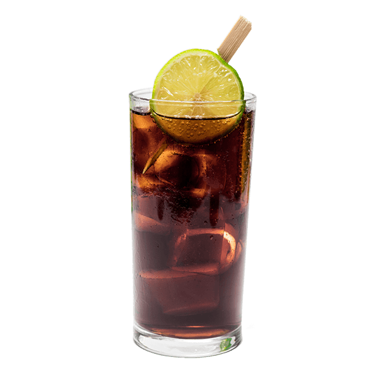

Jack's Maces | Ron de Cuba
Perla mezi tradičními kubánskými rumy je tento vysoce kvalitní 7letý rum. Jack's se vyznačuje příjemnou nasládlou vůní s tóny karamelu a vanilky, které postupně při degustaci přechází až do jemných dřevitých tónů. Náš rum má mimořádně jemnou, čistou a vyváženou chuť, kterou mu zaručuje právě dlouhé zrání. Jeho chuť výborně vynikne například v Long drinku Cuba Libre.
S námi si můžeš dát i drink!
Rum s Kolou

4 cl rumu Jack's Maces
12 cl Coca-Cola
Limetka
Led
Vysokou sklenici naplníme ledem co to ráčí a poté jej zalijeme rumem co to jde. Nakonec dolijeme kolou. Následně dozdobíme a dochutíme limetkou, případně citrónem. Pro příjemnější požitek doplníme brčkem.